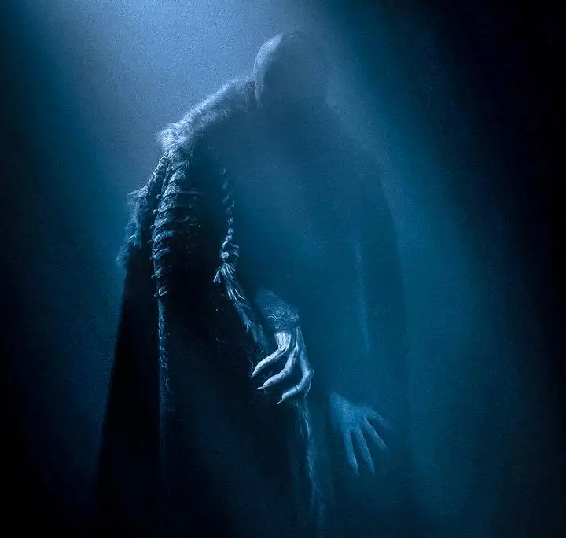

In ‘Man in Search of God’, Abraham Heschel writes:
The greatest hindrance to knowledge is our adjustment to conventional notions, to mental clichés. Wonder or radical amazement, the state of maladjustment to words and notions, is, therefore, a prerequisite for an authentic awareness of that which is.
One of many things that people like, and fear, about hallucinogens: they forcibly open the mind to this kind of authentic awareness.
the business of doubt is one of auditing the mind’s accounts about reality rather than a concern with reality itself; it deals with the content of perception rather than with perception itself…Doubt, then, is an interdepartmental activity of the mind…When in doubt, we raise questions; when in worder, we do not even know how to ask a question. Doubts may be resolved, radical amazement can never be erased. There is no answer in the world to man’s radical wonder. Under the running sea of our theories and scientific explanations lies the aboriginal abyss of radical amazement.
I think the word ‘aboriginal’ is well-chosen here. Object permanence is a kind of learned doubt: that what you see or don’t see is not the whole picture. But babies start by believing everything they see and don’t see.
But something unsettling here: what if we open our minds to radical amazement “at the unexpectedness of being as such” and then find it horrible? Abyssal rather than aboriginal?
This is the animating question of Robert Eggers’s Nosferatu, which Richard Brody calls “a grand theoretical conflict between science and the dark arts.” Willem Dafoe’s character says: “In order to tame darkness, we must first acknowledge that it exists!” Doubt is a dead end, the movie says; we must first open our eyes to evil.
But the horror!

It can drive you mad.
Likewise, when we actively resist our “adjustment” to factory farming, and look directly at it:
I thought about this when Heschel says: “A philosophy that begins with radical doubt ends in radical despair.” But so too might authentic awarenessm if things really are horrible. MIchael Huemer thinks that “it’s extremely likely that the value of the universe is either positive infinity, or negative infinity.” How do we know which one?
I suppose my answer is as follows: